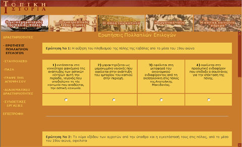
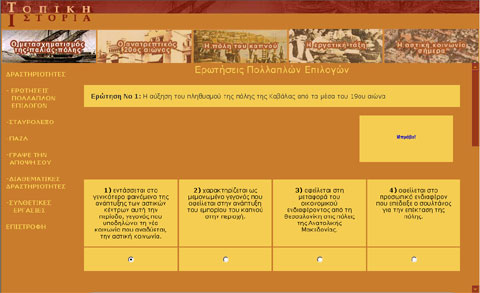
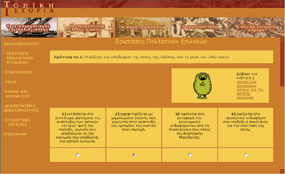

| Εγχειρίδιο Χρήσης |
6.1 Ερωτήσεις Πολλαπλών ΕπιλογώνΣε αυτή τη δραστηριότητα ο χρήστης καλείται να απαντήσει μία σειρά από ερωτήσεις πολλαπλών επιλογών. Η απάντηση μπορεί να επιλεγεί από το κουμπί τύπου 'radio' που βρίσκεται ακριβώς κάτω από αυτή.  Εικόνα 6.1.1 Ερωτήσεις Πολλαπλών Επιλογών Σε περίπτωση που ο χρήστης απαντήσει σωστά, επιβραβεύεται, όπως φαίνεται στην παρακάτω εικόνα.  Εικόνα 6.1.2 Ερωτήσεις Πολλαπλών Επιλογών - Σωστό Σε αντίθετη περίπτωση εμφανίζεται ένα μήνυμα λάθους και ο τίτλος του κειμένου, με μορφή υπερδεσμού, που αναφέρεται στο θέμα. Κάνοντας κλικ στον υπερδεσμό, ανοίγει νέο παράθυρο με το περιεχόμενο του κειμένου.  Εικόνα 6.1.3 Ερωτήσεις Πολλαπλών Επιλογών - Λάθος Σε κάθε σελίδα εμφανίζονται 3 ερωτήσεις πολλαπλών επιλογών. Ο χρήστης μπορεί να συνεχίσει σε επόμενη σελίδα κάνοντας κλικ στο κουμπί επόμενο που βρίσκεται στο τέλος της κάθε σελίδας. |